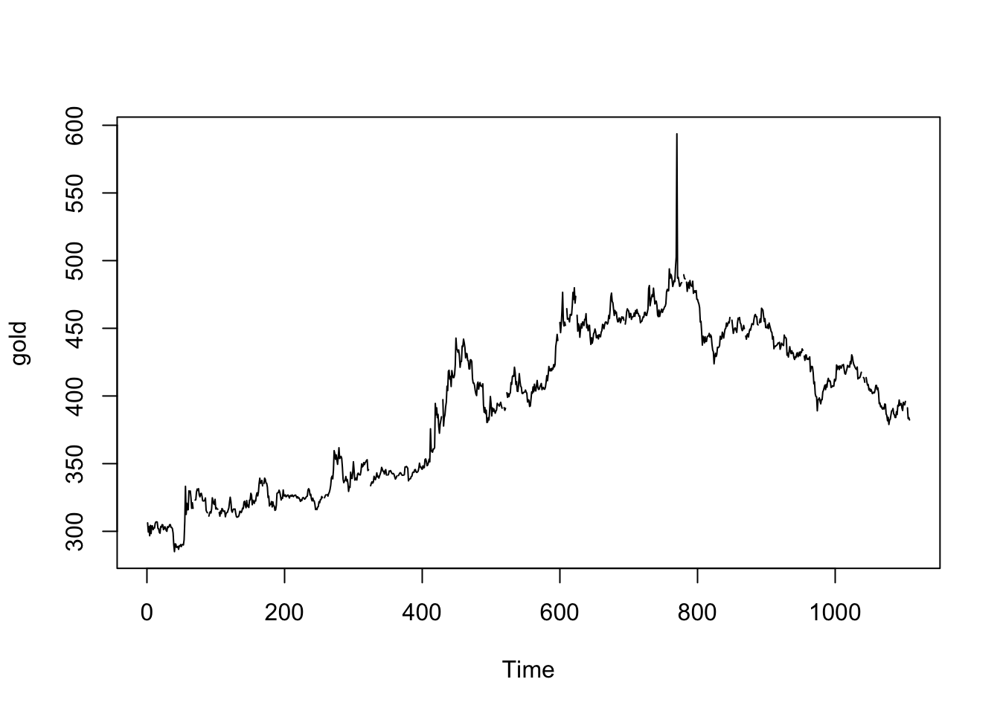
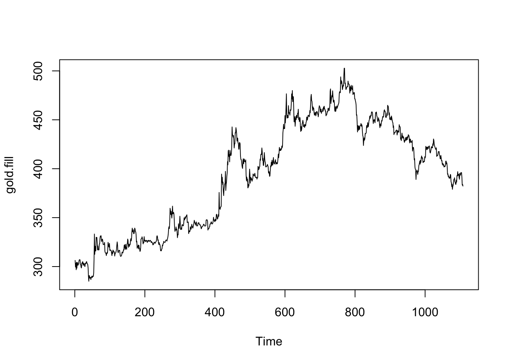
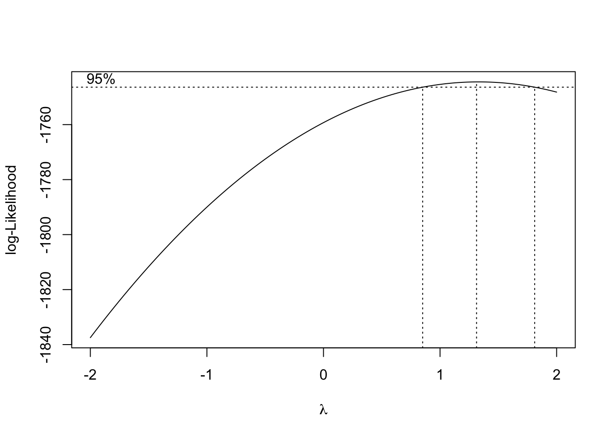
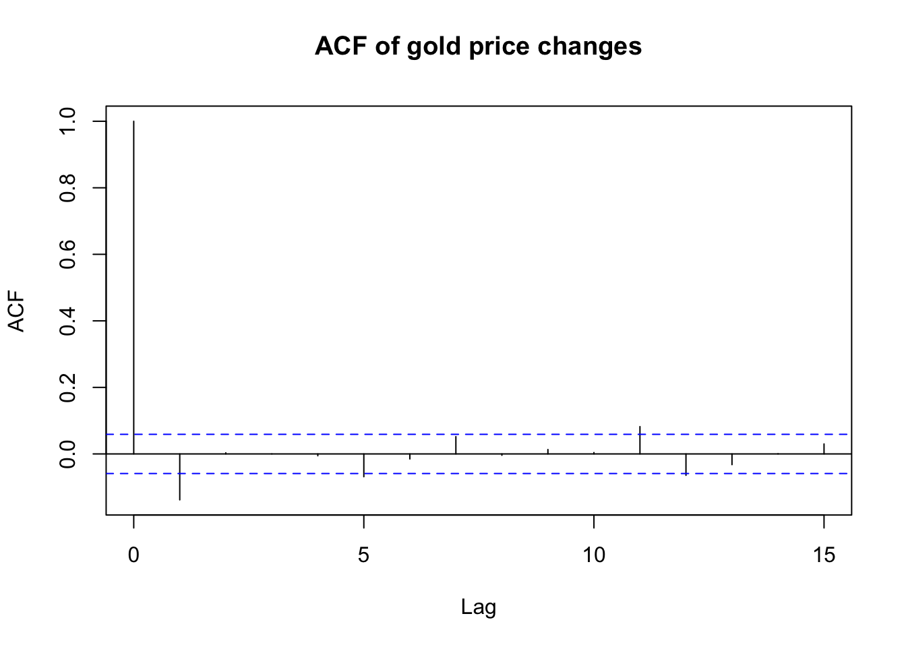
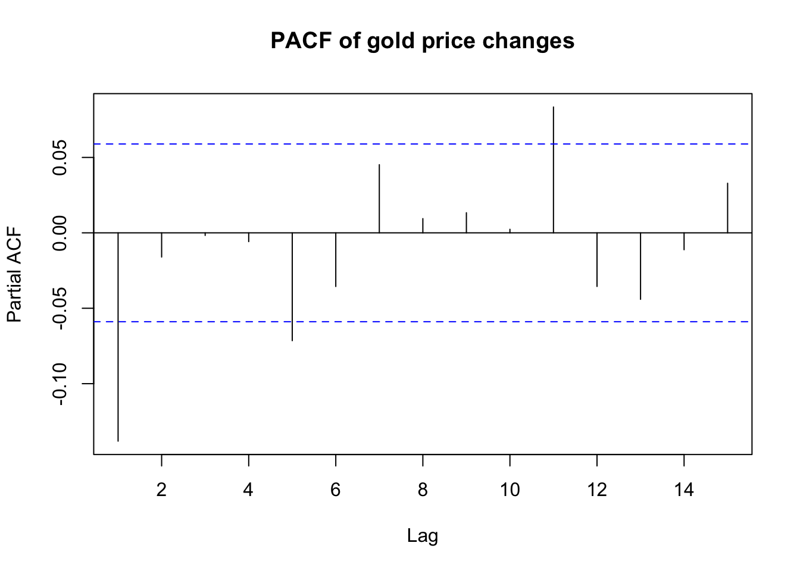
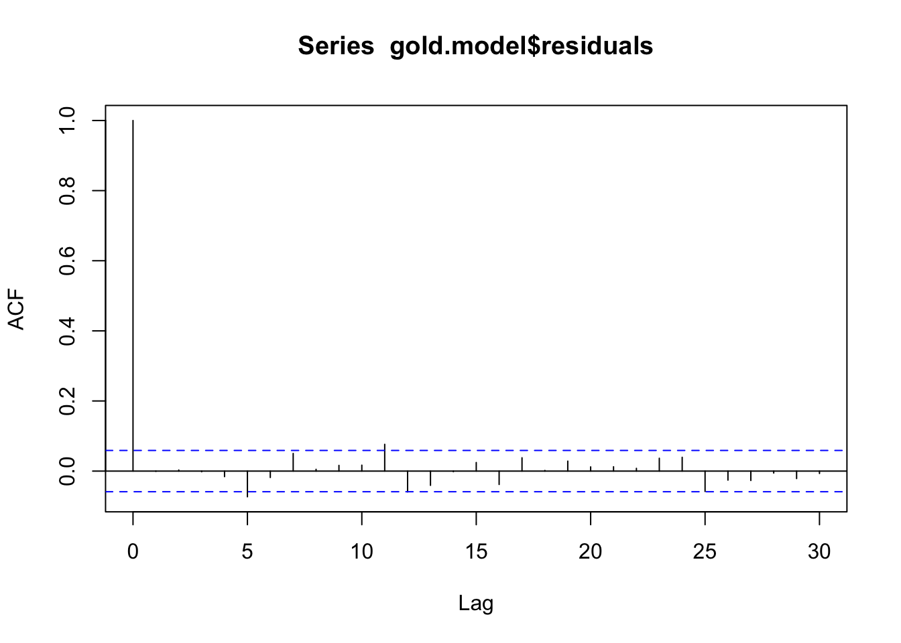
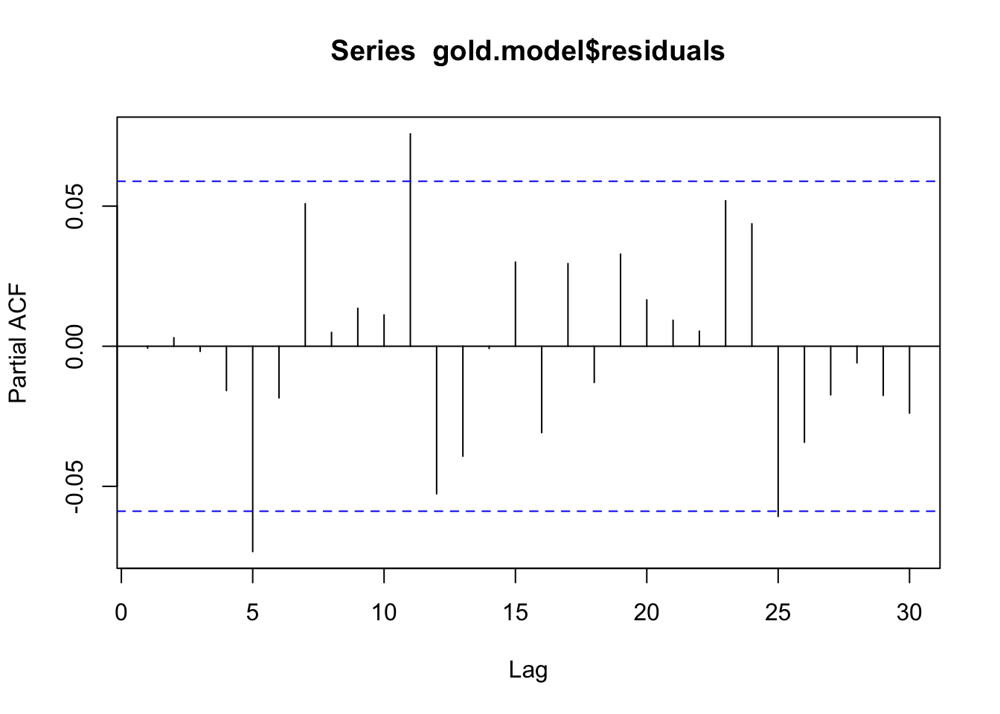
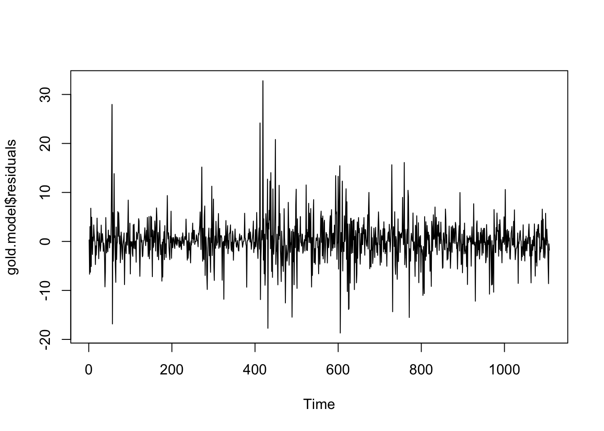
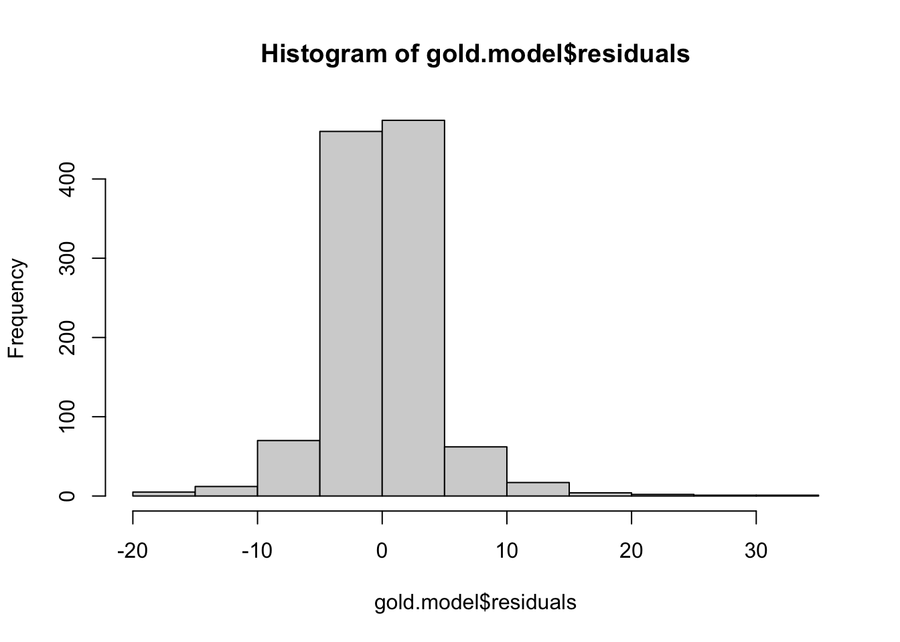

library(forecast)
library(zoo)
library(MASS)
library(tseries)
library(lmtest)ARIMA identification in R
Time series functions used in this document
In the table below, packages with italicized names will need to be installed, while the package names in a standard font face can be found in most base R distributions (though they may need to be loaded into your workspace).
| Package | Function name | Purpose |
|---|---|---|
| zoo | na.locf | Fill NAs from surrounding values |
| MASS | boxcox | Suggest Box-Cox parameter lambda |
| tseries | adf.test | ADF stationarity test |
| tseries | kpss.test | KPSS stationarity test |
| stats | acf | Compute and plot autocorrelation |
| stats | pacf | Compute and plot partial autocor |
| forecast | auto.arima | Identify ARIMA order and coefs |
| stats | arima | Fit a specific ARIMA model |
| forecast | forecast | Look-ahead prediction of a ts model |
| stats | shapiro.test | Test if data could be normal |
| stats | ks.test | Test data against a distribution |
| lmtest | dwtest | Durbin-Watson test for lag 1 autocor |
| stats | Box.test | Ljung-Box test for multilag autocor |
The Box-Jenkins approach to ARIMA identification
There are two parts to learning ARIMA identification and estimation: conceptually, you should understand the flowchart of what steps to take at what time, and practically, you should know which commands to run in R and how to use them.
For the conceptual part, we will adopt the classic “Box-Jenkins” approach:
Recover a stationary series through reversible transformations
Box-Cox transformations to stabilize the variance and/or linearize a trend
Linear de-trending
Differencing (or multiple differencing), if needed
Seasonal adjustment (either remove seasonality here or fit it in Step 2)
You can move on to the next step when stationarity tests suggest the transformations have been successful (give or take any seasonal effects)
Fit an ARIMA or SARIMA model to the transformed series
Estimate the order through examination of the ACF and PACF plots
Rather than fit the differenced data to an ARMA model, explicitly fit a difference through the integration term \(I=d\).
If using SARIMA terms, fit the seasonal terms first before the main AR and MA terms
Use AIC (or AICc), the standard errors of the parameters, and domain expertise to reach a stopping point
You can move on to the next step when you have a parsimonious, sensical model which ideally possesses both stationarity and invertibility and does not “lose” badly to other models
Confirm the strengths and/or weaknesses of the model
Re-plot the ACF and PACF to examine lingering dependencies or seasonality
Test the innovations/residuals for autocorrelation or heteroskedasticity
You can stop when you are satisfied, or return to Step 1 if you feel a need for further improvement
We will explore a set of practical, functional ways to implement this method below.
Cleaning the data
As an example, let’s take a daily series of gold prices from the forecast package. The help file does not describe them very well; we know the series is meant to start Jan 1st 1985 and end March 31st 1989. There are a few missing values here, which can complicate any time series analysis.
help(gold)
plot(gold)
summary(gold) Min. 1st Qu. Median Mean 3rd Qu. Max. NA's
285.0 337.7 403.2 392.5 443.7 593.7 34 How we treat missing values depends on how they appeared in our data. Did we fail to observe these values, or were there no values be observed? Are these weekends, exchange holidays, days where the data firm had a system outage, or records which were later deemed unreliable?
For now, we will drag the prices — preserving the last known price across any missing observatinos until a new price is recorded.
gold.fill <- na.locf(gold)
gold[61:70] [1] 329.90 328.75 329.80 324.65 317.00 321.10 317.00 NA NA 323.10gold.fill[61:70] [1] 329.90 328.75 329.80 324.65 317.00 321.10 317.00 317.00 317.00 323.10In the original plot of the data, we see a very large spike about 2/3 of the way through the series. This could be a useful and interesting (albeit extreme) price movement, or it could be a data error. It’s worth examining, but without a date index it’s hard to know exactly when it happened.
#which observations are we seeing?
gold.fill[gold.fill>500][1] 502.75 593.70#which index values are they?
(1:length(gold.fill))[gold.fill>500][1] 769 770#about when does this take place?
as.Date('1985-01-01') + 769*(7/5)[1] "1987-12-13"#how big are the changes?
diff(gold.fill)[769:770][1] 90.95 -106.65#what are the largest daily changes before and after this?
range(diff(gold.fill)[1:768])[1] -20.85 32.65range(diff(gold.fill)[-1:-770])[1] -12.05 10.40After combing through several websites with their own historical gold series and even finding a scanned copy of a same-day newspaper article, I myself am tentatively concluding observavtion 770 ($593.70) to be a bad observation, possibly a finger slip from 9 to 0 ($503.70 fits much better with the historical data). Rather than make the change assuming it to be a typo, I will drag the prior day’s price:
gold.fill[770] <- gold.fill[769]
plot(gold.fill)
Assessing and recovering stationarity
Our work here has already been outlined in one or two previous notes, to which I now refer the reader.
Inspecting the plot above, the gold prices look like they may be a random walk. They certainly don’t look stationary. First, let’s examine whether a Box-Cox transformation might be helpful.
Warning
Note that a Box-Cox transformation cannot be applied to series with negative values. Because of this, we usually apply Box-Cox transformations before differencing the data.
boxcox(gold.fill~1)
The value \(\lambda=1\) is within the confidence interval, suggesting that the variance is already stabilized.1
With no need for transformation, we can directly test the hypothesis that the original series is a random walk and the differenced series is stationary:
#testing the original series: 'TRUE' suggests stationarity
suppressWarnings(adf.test(gold.fill)$p.value < 0.05)[1] FALSEsuppressWarnings(kpss.test(gold.fill)$p.value > 0.05)[1] FALSE#testing the first differences: 'TRUE' suggests stationarity
suppressWarnings(adf.test(diff(gold.fill))$p.value < 0.05)[1] TRUEsuppressWarnings(kpss.test(diff(gold.fill))$p.value > 0.05)[1] TRUEIdentifying the ARIMA order and estimating the parameters
Although automated routines exist to help us identify the ARIMA parameters, they sometimes produce nonsensical or unhelpful results. It’s very useful to first form prior hypotheses about the correct order from domain knowledge and/or diagnostic analysis.
First, we will assume that the correct integration order is \(d=1\), that is, first differences. From here, we will only be plotting the differenced cleaned data.
Second, we will not (at this time) fit any seasonal components. Although the data may suggest a slight seasonality, we will put it aside for now and focus on the main ARMA components.
Third, we will be open to the possibility of a constant but non-zero mean for the differenced data, which is equivalent to a linear trend in the original undifferenced data.
Fourth, we will view models with high orders (say, \(p \gt 4\) or \(q \gt 4\)) with suspicion. Most processes worth describing with an ARIMA model have fairly low orders for \(p,d\) and \(q\).
To explore the AR and MA orders, it’s often helpful to look at an autocorrelation function (ACF) plot and a partial autocorrelation function (PACF) plot.
acf(diff(gold.fill),lag.max=15,main='ACF of gold price changes')
pacf(diff(gold.fill),lag.max=15,main='PACF of gold price changes')
The ACF and PACF both show modest but significant correlations and partial correlations at the 1st lag. Beyond that, there are no clear patterns, though perhaps some slight evidence for weekly (lag=5) or bimonthly (lag=11, which accounting for weekends would be 15 days) cycles. As mentioned earlier, we will discard any hypothesis of seasonality at this time.
Taken together, the ACF and PACF suggest a simple model, where the AR and MA orders are each either 1 or 0. The four models worth exploring, then, are:
- ARIMA(0,1,0)
- ARIMA(1,1,0)
- ARIMA(0,1,1)
- ARIMA(1,1,1)
Let’s see what R comes up with. Here we will use the automated routine forecast::auto.arima, though readers may prefer the tidyverse alternative fable::ARIMA, both of which are simply convenience wrappers for a lot of tedious fiddling with the base function stats::arima:
auto.arima(gold.fill,d=1,seasonal=FALSE,max.p=4,max.q=4,
stepwise=FALSE,approximation=FALSE)Series: gold.fill
ARIMA(0,1,1)
Coefficients:
ma1
-0.1398
s.e. 0.0297
sigma^2 = 18.45: log likelihood = -3183.64
AIC=6371.29 AICc=6371.3 BIC=6381.31R suggests a simple ARIMA(0,1,1) model, meaning that the first difference of the daily gold prices is weakly negatively correlated with each prior day’s innovation: gold prices correct their own shocks to some extent, and if new information causes them to climb or dip one day, they are likely to dip back or climb back (respectively) the next day.2
The estimated coefficient on the AR(1) parameter is small, but it’s more than four times its standard error, so we can be fairly sure that it’s a useful and significant modeling term. If we compare the AIC of 6371.56 to the other models, we should find that it’s the best fit (i.e. least AIC) amongst our four candidates:
c(ARIMA011=arima(gold.fill,order=c(0,1,1))$aic,
ARIMA110=arima(gold.fill,order=c(1,1,0))$aic,
ARIMA111=arima(gold.fill,order=c(1,1,1))$aic,
ARIMA0101=arima(gold.fill,order=c(0,1,0))$aic) ARIMA011 ARIMA110 ARIMA111 ARIMA0101
6371.289 6371.555 6373.279 6390.805 We can tentatively model these daily gold prices with an ARIMA(0,1,1) model, though an inspection of the AICs reveals that an ARIMA(1,1,0) model would work almost as well.
Prediction
Since we choose the ARIMA(0,1,1) representation, we can only meaningfully predict one day into the future. By the time we reach two days into the future, the series will be reacting only to future information (the new innovation at \(t+2\) and a small negative weight on the prior innovation at \(t+1\), both of which we do not observe and cannot estimate and have expectation 0.)
If we instead chose the ARIMA(1,1,0) representation, we could predict further into the future: the price change on day \(t+2\) would be weakly correlated with the price change on day \(t+1\), which we do not observe but is itself weakly correlated with the price change on day \(t\), which we do observe. However, the small AR coefficient and this geometric dampening mean that our forecasts will quickly lose any practical utility.
Still, for those interested, we can hazard a guess for the first out-of-sample date, April 4th, 1989:
gold.model <- arima(gold.fill,order=c(0,1,1),include.mean=FALSE)
forecast(gold.model,h=1) Point Forecast Lo 80 Hi 80 Lo 95 Hi 95
1109 382.5475 377.0459 388.0491 374.1335 390.9615predict(gold.model,n.ahead=1)$pred
Time Series:
Start = 1109
End = 1109
Frequency = 1
[1] 382.5475
$se
Time Series:
Start = 1109
End = 1109
Frequency = 1
[1] 4.292947I’ve shown the outputs from two different prediction functions, forecast::forecast and stats::predict.arima0, which differ in their presentation of results but, as you can see, recover exactly the same point forecast of $382.5475.
One prediction, taken in isolation, is never a great way to judge a model. We will discuss model metrics and model validation techniques later in this course. But as a tiny, tiny weight on the scale, consider the following:
Daily gold prices were shown to be an unforecastable random walk
Differences in gold prices were shown to be mean-zero and stationary
Therefore, we might assume the best prediction for April 3rd, 1989 would be the prior trading day’s price of $382.30 on March 31st, 1989 (call this the “naive” predictor)
However, our ARIMA model suggests that the price will instead ‘correct’ itself slightly to $382.55
As it happens, the true closing price on April 3rd, 1989 was $385.30: both our predictions would have been too low, but the ARIMA prediction was somewhat closer than the naive prediction.
Cleanup
It’s always best to test your final model against some of your assumptions:
#check for normality of the estimated innovations
# (note, only affects standard errors, not main findings)
shapiro.test(gold.model$residuals)
Shapiro-Wilk normality test
data: gold.model$residuals
W = 0.90507, p-value < 2.2e-16ks.test(gold.model$residuals,pnorm,sd=sd(gold.model$residuals))
Asymptotic one-sample Kolmogorov-Smirnov test
data: gold.model$residuals
D = 0.095658, p-value = 3.124e-09
alternative hypothesis: two-sided#check for lingering autocorrelation in the estimated innovations
dwtest(gold.model$residuals~1)
Durbin-Watson test
data: gold.model$residuals ~ 1
DW = 2.0012, p-value = 0.5081
alternative hypothesis: true autocorrelation is greater than 0Box.test(gold.model$residuals,fitdf=1,type='Ljung-Box')
Box-Ljung test
data: gold.model$residuals
X-squared = 0.00053447, df = 0, p-value < 2.2e-16acf(gold.model$residuals)
pacf(gold.model$residuals)
#check for stationarity of the estimated innovations
suppressWarnings(adf.test(gold.model$residuals))
Augmented Dickey-Fuller Test
data: gold.model$residuals
Dickey-Fuller = -9.1815, Lag order = 10, p-value = 0.01
alternative hypothesis: stationarysuppressWarnings(kpss.test(gold.model$residuals))
KPSS Test for Level Stationarity
data: gold.model$residuals
KPSS Level = 0.28653, Truncation lag parameter = 7, p-value = 0.1plot(gold.model$residuals)
hist(gold.model$residuals)